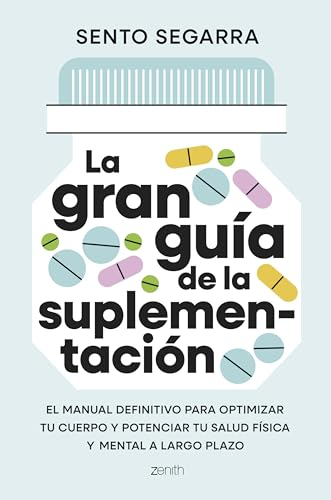

💊 Suplementos y Nutrición
Descubre suplementos naturales, vitaminas y nutrientes esenciales que pueden ayudarte a optimizar tu salud y alcanzar tus objetivos de bienestar.

La Gran Guía de Suplementación
El manual definitivo para optimizar tu salud, mejorar tu rendimiento y aprender a suplementarte con base científica.
Ver en AmazonTriple Magnesio

El triple magnesio combina tres formas biodisponibles para maximizar la absorción y ofrecer beneficios completos...
Malato de Magnesio

El malato de magnesio es una forma altamente absorbible que apoya la producción de energía y la función muscular...
Aloclair

Aloclair es un gel bucal diseñado para aliviar el dolor y proteger las lesiones de la mucosa oral...
Andrographis Paniculata

Andrographis paniculata es una planta medicinal con propiedades inmunomoduladoras y antiinflamatorias...